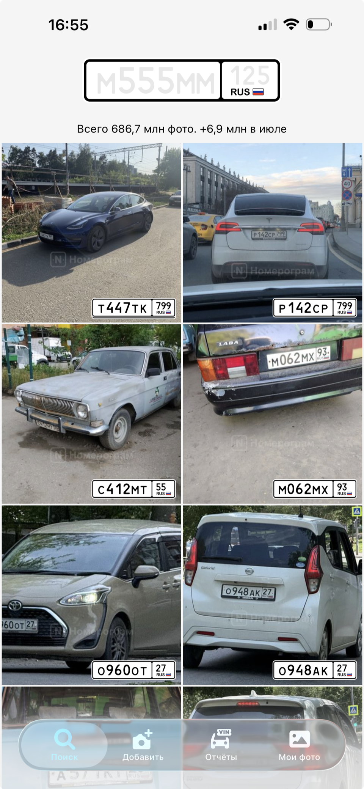

Nomerogram shows a car’s sale history and photos by its license plate.
The history comes from old sale ads, social networks and open databases, and from drivers themselves: photograph a car behaving badly on the road, and the shot joins that plate’s public record.
App Store Google PlayMy Role and Responsibilities
Extensive experience collaborating in cross-functional teams with PMs, analysts, engineers, and QA.
- Owned UX for the iOS and Android apps: search, history, and the photo contribution flows.
- Turned analytics findings into features: history clutter among heavy users became the case for Saved Cars.
- Ran in-depth interviews and hallway tests to pick between prototyped concepts before development.
- Worked with the product manager and analyst to prioritize the roadmap by impact.
- Prototyped key flows in Figma, including edge cases for camera-based plate recognition.
Photo Contribution

686.7M photos total · +6.9M in JulyProblem
Photos are the product’s key asset — how good a car check is depends directly on the images behind it. But adding a photo sat outside the core flow.
Only 12.7% of users ever opened the upload screen, and among users who searched for cars, just 1.5% uploaded a photo.
That showed the real problem wasn’t discoverability — it was a lack of motivation to share photos.
Solution
Together with the PM, we reframed the problem: it wasn’t that users couldn’t find the upload feature — it was that they didn’t see its value.
I redesigned the onboarding: instead of simply showing that photo upload was possible, we explained to the user why it mattered.
We tested several illustration-and-message variants in an A/B test. The winning variant was shown after a few visits to the app, once the user was already familiar with the product.
I built the illustration’s animation myself in LottieFiles, so handoff cost nothing — developers just dropped the JSON into the code.
Outcome
- A month-long A/B test showed a +27% increase in visits to the upload screen
- Uploaded photos nearly doubled
Plate Scanner
Problem
Photos were an important source of content for the product, and the team needed to grow the volume of user-submitted car photos. Users already had a natural scenario for it: driving, or just passing by, and noticing an interesting car they wanted to know more about.
The only way to check it was to photograph the plate, then type the number into search by hand — an extra step landing right at the moment the user was most motivated to check.
Solution
I designed a camera-first check: point the camera at the plate inside the on-screen frame, and the app reads the number and opens the report right away.
The frame was deliberately kept small: to fit the plate, the user naturally held the whole car in the shot. That did double duty — it made the check simpler, and it fed the product’s photo library with additional car shots.
Outcome
- Checking a car on the street collapsed to a single action: point the camera and get the result
- After launch, scanning became a noticeable way to check plates on the go — improving the experience while also feeding the product’s car-photo library
Saved Cars
Problem
Active users checked up to 30 license plates in a single session, but history kept only the 20 most recent searches.
Cars they wanted to come back to silently disappeared, and they had to search for them all over again.
Solution
Analytics and interviews pointed to the same need: a way to save a car deliberately, separate from the automatic history.
I built several prototypes and tested them in quick usability tests and hallway sessions. Saved Cars won.
Outcome
- In the A/B test, 15% of users adopted Saved Cars within a month
- No complaints in reviews or support after release
- History stayed manageable even for those checking dozens of plates a session